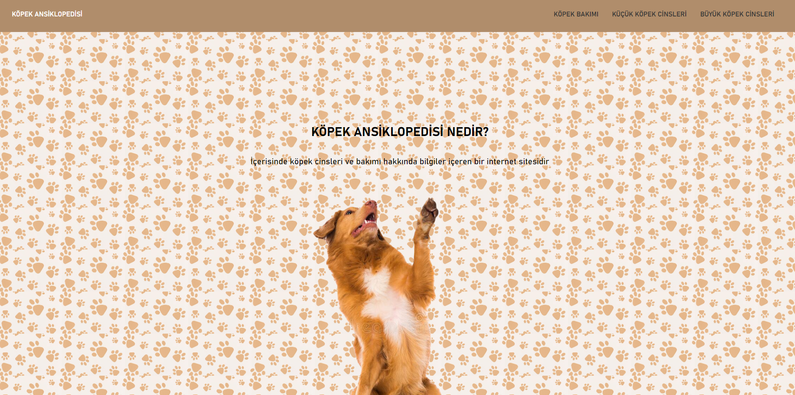

BATU PORTFOLIO
ABOUT BATU
WHY YOU NEED BATU
PROJECTS
Hello I am
Front-End developer
Batu
I'm first grade industrial engineering student at Uskudar University.
I started to learn Front-End developing 4 month ago and I would like to develope myself on this way.
PROJECTS
